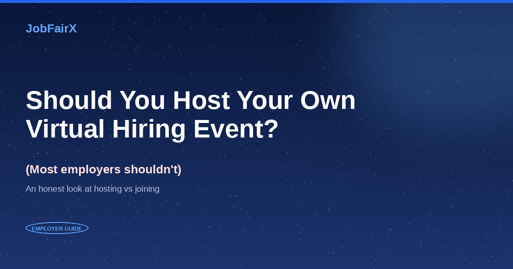
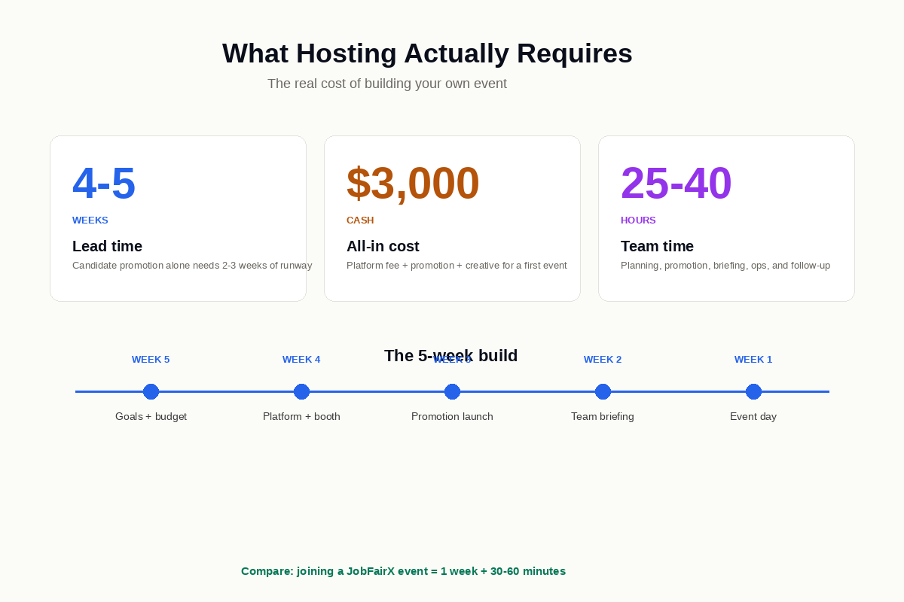
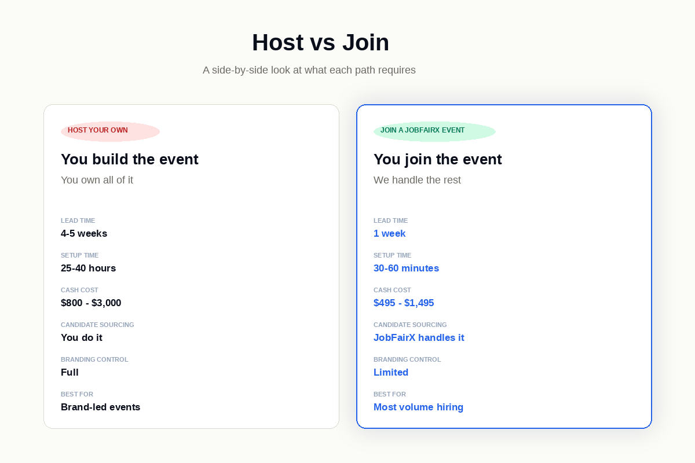

Should You Host Your Own Virtual Hiring Event? (Most Employers Shouldn't)
Hosting your own virtual hiring event takes 4-5 weeks of lead time, $800 to $3,000 in cash, and 25-40 hours of team time. Here's what it actually requires — and why most employers are better off joining an existing event instead.

Most employers searching "how to host a virtual hiring event" probably shouldn't be hosting one. The operational lift of building your own runs four to five weeks of lead time, $800 to $3,000 in cash, and 25 to 40 hours of team time across a small recruiting team. For most hiring needs, joining an existing virtual hiring event delivers comparable results in about one week with 30 to 60 minutes of setup.
This article covers what hosting actually requires, the narrow set of scenarios where hosting your own is the right call, and what joining an existing event looks like as the alternative.
If hiring is a numbers game and the operational lift is what's slowing you down, joining an event you didn't build is the cheapest way to get scheduled interviews on the calendar fast.
What "Hosting" vs "Joining" Actually Means
Two completely different operational models. The terms get used interchangeably, but the work involved is not the same.
Hosting your own event: You build it from scratch. You select a platform (Brazen, vFairs, Premier Virtual), configure branded booth pages, source candidates yourself through paid ads and your existing pipeline, run promotion across multiple channels for two to three weeks, brief your hiring team, manage the live event, and handle post-event data export and follow-up. You own everything — the audience, the brand, the timing, the operations.
Joining an existing event: You register for an event a platform already hosts (JobFairX runs them weekly across cities and industries). You post your open jobs, set your screening criteria, and review the candidate interview requests we send you. The platform handles candidate sourcing, promotion, matching, scheduling, and post-event reporting. You show up for the interviews.
The choice isn't about which model is "better" in the abstract. It's about which fits your specific hiring use case.
What Hosting Actually Requires
For the small subset of employers where hosting makes sense, here's the honest playbook. Read this section even if you're already leaning toward joining — understanding the lift is what makes the case for joining concrete.

The 5-Week Timeline
- Week 5: Set goals and KPIs, pick date and audience, get budget approval.
- Week 4: Select platform, sign contract, configure your employer booth, build the registration flow.
- Week 3: Launch candidate promotion across at least four channels. This is the most important week.
- Week 2: Brief your hiring team. Run a technical dry run. Send reminder emails.
- Week 1: Final reminders. Confirm interview schedules. Event day.
If you compress this timeline, candidate promotion suffers. If candidate promotion suffers, attendance suffers. If attendance suffers, the event fails. The runway is non-negotiable.
The Cost
Total cash: $800 to $3,000 for a first event. By the third or fourth event, that drops to $500 to $1,500 because templates and partner promotion lists are already in place.
The Team Time
- Planning: 5-10 hours
- Promotion management: 5-10 hours
- Hiring team briefing: 2-3 hours
- Event day operations: 4-6 hours
- Post-event data entry and follow-up: 5-10 hours
Total: 25 to 40 hours across your recruiting team for a single first event. This is the number most employers under-count when they decide to host their own. Cash costs are visible; time costs are not.
The pattern that breaks most first-time events: Most failed virtual hiring events are promotion failures. Teams pick a great platform, build a nice booth, send one email three days before the event, and end up with 12 registrations and 4 no-shows. Promotion has to start two to three weeks out across at least four channels. There is no shortcut.
When Hosting Your Own Is the Right Call
Three narrow scenarios where hosting your own genuinely makes sense:
1. You have a strong existing candidate database
If you've already built a pipeline of pre-qualified candidates (past applicants you liked but didn't hire, silver-medalist candidates from previous searches, employees from acquired companies), hosting your own event lets you tap that pipeline directly. The 5-week timeline shrinks because you skip the cold candidate promotion work.
2. You have specific employer-brand requirements
Enterprise employer brand showcases. Hybrid in-person/virtual events tied to a flagship recruitment moment. Events that are partially marketing exercises where the visual environment matters. These benefit from the full control hosting your own provides.
3. You're running events as a continuous program
If you're hosting an event every six to eight weeks as part of an ongoing strategy, the per-event setup cost amortizes. The first event takes 25-40 hours. The fourth takes 10-15 because templates exist and partner lists are warm.
If you don't fit one of those three categories, you're probably better off joining an existing event. For platforms purpose-built for hosting your own — Brazen, vFairs, Premier Virtual — see our platform comparison post.
The Case for Joining Instead
For the 95% of employers who don't fit one of the three "host your own" scenarios, joining an event makes more sense on every dimension that matters.

Lead time: one week instead of five. JobFairX hosts events every week, rotating themes across cities and industries — Healthcare, Technology, Veterans, Diversity, Entry-Level. You reserve a spot one week before event day.
Setup: 30-60 minutes instead of 25-40 hours. You upload your open roles, set screening criteria, and configure your interview slots. That's it. No platform configuration, no candidate sourcing, no booth design, no promotion management.
Candidates: matched and pre-scheduled, not sourced. JobFairX matches qualified candidates from our network to your specific jobs. They request interviews with you. You review and accept before event day. Your calendar arrives full of scheduled interviews you've already approved.
Cost: $495 to $1,495 per event, all-in. Includes candidate matching, platform access, and the full post-event report. No separate registration fees, no per-candidate costs, no promotion budget to manage.
Risk: low. You're not investing in event infrastructure you can't reuse. If virtual hiring events don't fit your use case, you've spent under $500 to find out — instead of $3,000 plus 40 team hours.
What It Looks Like to Join a JobFairX Event
The four phases:
- Register (~1 week before event day) — browse upcoming events on the JobFairX calendar, pick the one that fits your roles, reserve your spot.
- Set up (30-60 minutes) — post your open jobs, define your screening questions, set your available interview slots.
- Review matched candidates (in the week before) — JobFairX matches candidates to your jobs. They request interviews. You accept or decline.
- Event day (2-3 hours) — your calendar is already full of pre-scheduled interviews. You run them. The full post-event report is ready the moment the event ends.
For the full walkthrough, see our complete guide to how a virtual job fair works on JobFairX.
Host vs Join: The Side-by-Side
What Customers Actually Do
Target didn't host their own. They joined a JobFairX entry-level event and conducted 92 interviews in one event, extending 19 hires. "This was our second event," their Senior Recruiter said. "The pre-scheduled interview times kept everything moving. We've already registered for the next one."
Tesla ran three Veterans hiring events back-to-back on JobFairX. 14 engineers hired across the three events. "The candidates came prepared and were all qualified for the roles we were hiring for," their Recruiter reported. None of those three events required Tesla to build platform infrastructure or run candidate promotion.
Western Regional Medical Center ran a Healthcare hiring event. 36 interviews, 7 hires across LPN, RN, and Medical Assistant roles in a single afternoon. "What a great way to meet candidates and move quickly through interviews," their Director of Talent Acquisition wrote.
None of these companies built their own event infrastructure. They joined existing JobFairX events and got the results they needed without the operational lift.
Ready to join an event instead of building one?
Browse upcoming virtual hiring events across industries and cities. Reserve your spot in under a minute.
View upcoming events →Frequently Asked Questions
Should I host my own virtual hiring event?
For most employers, no. The operational lift (4-5 weeks of lead time, $800-$3,000 in cash, 25-40 team hours) is bigger than the value for most hiring needs. Joining an existing event delivers comparable results in about one week with 30-60 minutes of setup. The exceptions: employers with a strong existing candidate database, employers with specific brand requirements that need full visual control, or teams running events as a continuous program every 6-8 weeks.
How much does it cost to host a virtual hiring event?
$800 to $3,000 all-in for a first event. Platform fee runs $300 to $2,000, candidate promotion adds $0 to $1,500, and creative/landing page costs add $0 to $500. By the third or fourth event, total cost drops to $500 to $1,500 because templates and partner lists are already in place. Add 25-40 hours of team time on top of the cash.
How long does it take to host a virtual hiring event?
Four to five weeks of lead time for a first event. Most of that is candidate promotion — you need two to three weeks of runway to build attendance. Teams running their third or fourth event compress to two to three weeks because templates exist and partner lists are warm.
What's the difference between hosting my own and joining an existing event?
Hosting your own means you build the event from scratch — select platform, configure booth, source candidates, promote, manage operations. Joining means you reserve a spot at an event a platform already hosts. Hosting gives you full control over branding and timing. Joining gives you 30-60 minute setup, pre-sourced candidates, and a one-week lead time.
Can I host my own virtual hiring event on JobFairX?
No. JobFairX runs the match-and-schedule model — you join events we host, not build your own. For platforms purpose-built for hosting, see Brazen, vFairs, or Premier Virtual. Our platform comparison post breaks down the leading hosting options.
How do I join a JobFairX event instead?
Browse upcoming events at jobfairx.com/employer, pick one that fits your roles and timing, and reserve your spot. Lead time is one week. Setup takes 30-60 minutes. Starter packages start at $495 per event.
Are there hidden costs in hosting your own event?
Yes. The biggest one is team time, which most employers under-count. Planning, candidate promotion management, hiring team briefings, event-day operations, and post-event follow-up easily eat 25-40 hours across a small recruiting team for a first event. Cash costs are visible. Time costs are not.
What's the success rate for first-time hosted events?
Most first-time DIY events under-perform on registrations because candidate promotion is harder than it looks. The teams that succeed typically have an existing candidate database to draw from. First-timers without that often get 12-20 registrations and 4-8 no-shows. By contrast, JobFairX events draw from an existing network of pre-qualified candidates, which is why customer outcomes like Target's 92 interviews and Tesla's 51 interviews per event are typical, not exceptional.
Sources
- SHRM 2025 Talent Acquisition Benchmarking Report
- SHRM: Virtual Recruiting Best Practices
- Harvard Business Review: Making Virtual Recruiting Work
- Indeed: How to Host a Virtual Job Fair
- JobFairX Customer Data, 2025